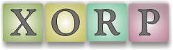

Contributing
XORP is an open source project: we want people to
contribute. We'd like to build a community of users and a community
of developers. Ultimately the project to become self-sustaining. At
the present time, the project is bootstrapping: even attaining basic
router functionality requires a large amount of effort. We currently
lack the functionality to attract users, but perhaps offers enough
promise to attract a few bold developers and documenters. As the
basic functionality pads out, hopefully we'll attract more users and
garner more contributions.
Listed below are a few areas where contributions could usefully be
made now. If you are interested in these, have additional
suggestions, or are generally interested in getting involved, we'd
like to hear from you.
General
Code contributions
- Code reviews.
Pick a module. Look it over. Read the source. Read the
kdoc documentation (see ${XORP}/docs/kdoc). Compare and
contrast the design documents (under ${XORP}/docs) with the
code. Code reviews are most welcome.
- Scripting language support.
It would be great to be able to call XORP code from other
languages. One way this might be done for maximal benefit
and moderate effort would to use SWIG. SWIG generates
wrappers for C and C++ code allowing it to be called from a
wide range of scripting languages.
- A Click
based forwarding engine abstraction (FEA).
It's been a goal from day one to support click, but as
we've gone forward we've not managed to keep the Click
support in the FEA up to date. This is a crying shame and
needs to be rectified.
- Adding multicast support to
Click.
This is a Click-oriented item, but would benefit XORP
and potentially benefit other multicast projects.
-
Design and development of a multicast testing framework.
Documentation
- Developer API documentation reviews and feedback.
kdoc comments are embedded in the C++ header files and
turned into html documentation using kdoc. This documentation
is always a work-in-progress and always has room for improvement.
Feedback and patches are welcome.
- Design documentation.
Design documents are available online at ... and accessible in the
source tree under ${XORP}/docs. If you have the time please
read them over, and feel free to make suggestions, point out areas of
ambiguity, and inconsistencies, etc.
- Web site design.
As with everything in this project, the web pages are
available via CVS and CVSWeb. The web site tends to
undergo "development" in the run up to releases
and remain relatively static the rest of the time.
Donations
We're amenable to donations. Please mail mjh@icir.org if
you are interested in making a donation.
- Hardware/Software.
Anything from spare machines, network cards, etc, up to 64bit
workstations. Preferably equipment with a moderate size user
base and publicly available documentation since we have very
limited developer resources. At some point in the future, we'd
like to be in a position to correlate hardware donations to
external project contributors.
- Financial.
Money pays the rent, pays interns,
and potentially allows us to employ more people full time.
|
|